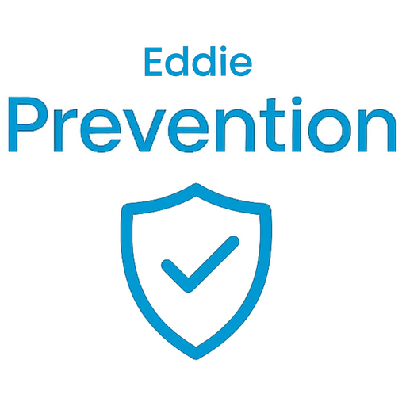
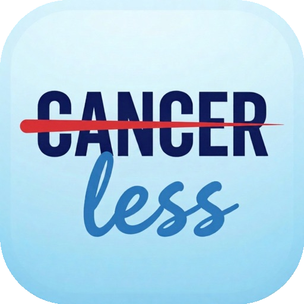
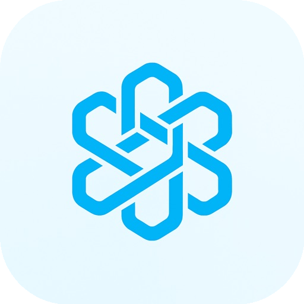
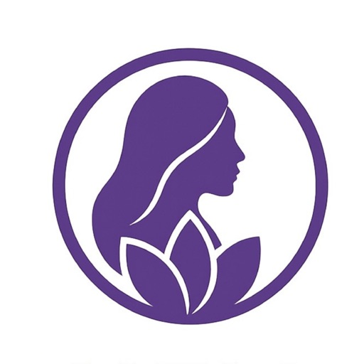
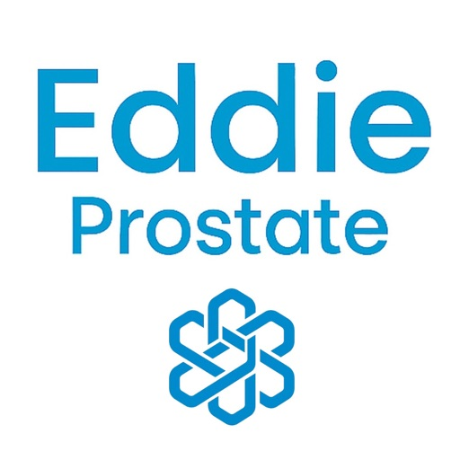
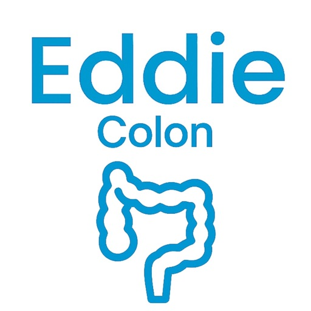
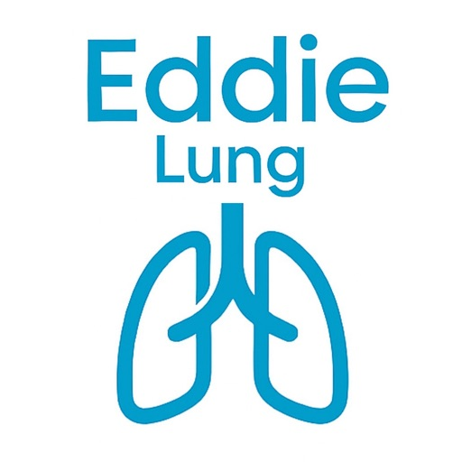

Every app is free. No account needed to try. Educational only — not medical advice, and never a substitute for your doctor. For everyone, everywhere.

Eddie PreventionFlagship
Two minutes a day. Four small wins. Daily check-ins, a Wellness Score, and streaks that make healthy habits stick.

Cancerless
Know your risk. Build healthier habits. Educational risk assessments, daily check-ins, and plain-language cancer prevention.

Ask Eddie
Your cancer copilot. Ask questions in plain language, any time — diagnoses, treatments, trials, and what to ask your doctor.

Ask Shelia
Women’s health, clearly explained. Private answers on screenings, periods, pregnancy, menopause, heart health, and more.

Eddie Prostate
Prostate risk and education in your pocket — a risk check, plain-language answers, and questions for your urologist.
iPhone and iPad only

Eddie Colon
Colorectal cancer, clearly explained — screening options, a risk check, and what to ask before your colonoscopy.
iPhone and iPad only

Eddie Lung
Lung cancer, clearly explained — screening eligibility, a risk check, and plain-language answers.
iPhone and iPad only
Clinical Trials Navigator
Find clinical trial opportunities that may fit your situation — and prepare for the conversation with your care team.
All free. All confidential. No account needed.